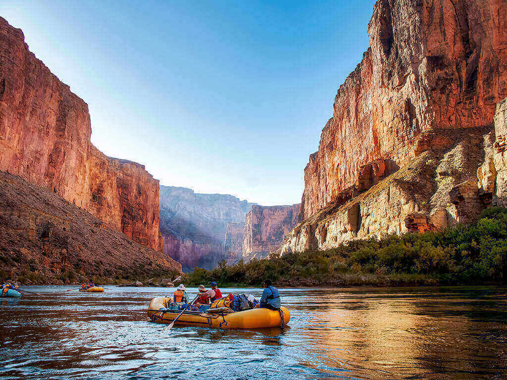

Magic Experiences with Dry Oar
Rafting at the Grand Canyon in Arizona
This is the grand daddy of all canyons and the grand daddy of
all river trips. You will never forget your visit to the Grand Canyon.
Grand Canyon river rafting combines world-class whitewater with
breathtaking scenery to make one truly unforgettable river experience.
The canyon is filled not only with exhilarating whitewater rapids,
but with side canyons and ancient indian ruins accessible only by river.
CLASS I - X: The Grand Canyon uses a unique river rating scale.
The rapids in the Canyon are technically rated I - X ( 1 - 10) to
accommodate such a wide variety of rapids and river variances.
However, most people are familiar with the regular I - V river rating scale,
so we often refer to both.